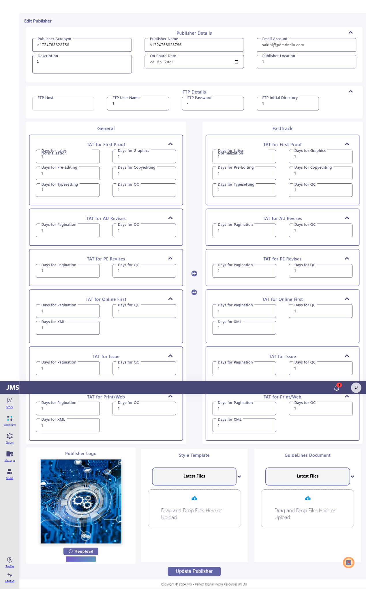

-
Verifying Navigating to the Add Publisher Page successfully
7:47:50 PM / 00:00:00:878 Pass
Verifying Navigating to the Add Publisher Page successfully
08.27.2024 7:47:50 PM 08.27.2024 7:47:51 PM 00:00:00:878 · #test-id=26Sakthi AddPublisherStatus Timestamp Details Info 7:47:50 PM Clicking the Base icon Info 7:47:50 PM Clicking the add publisher icon Info 7:47:51 PM Navigated successfully to the addpublisher page Pass 7:47:51 PM Test Passed Info 7:47:51 PM Trace saved: traces/NavigateToAddPubIcon.zip -
JMS-118 : Add publisher with valid mandatory details - Version 2
7:47:54 PM / 00:00:19:103 Pass
JMS-118 : Add publisher with valid mandatory details - Version 2
08.27.2024 7:47:54 PM 08.27.2024 7:48:13 PM 00:00:19:103 · #test-id=27Sakthi AddPublisherStatus Timestamp Details Info 7:47:54 PM Parameter: T Info 7:47:54 PM Parameter: test Info 7:47:54 PM Enter all the input which are mandatory Info 7:47:54 PM Click on 'ADD publisher' Info 7:47:54 PM verifying publiher is added Info 7:47:54 PM Verify each publisher's details from Edit-Publisher page Publisher Acronym Publisher Name Email Description On Board Publisher Location TAT Logo Guidelines Style template Info 7:48:09 PM Publisher added successfully Info 7:48:09 PM Details are added successfully Pass 7:48:09 PM Test Passed Info 7:48:13 PM Trace saved: traces/AddPublisherWithCopyTatData.zip -
validate the AddPublisher Functionality by add all the TAT Data without copy
7:48:17 PM / 00:00:18:541 Pass
validate the AddPublisher Functionality by add all the TAT Data without copy
08.27.2024 7:48:17 PM 08.27.2024 7:48:36 PM 00:00:18:541 · #test-id=28Sakthi AddPublisherStatus Timestamp Details Info 7:48:17 PM Parameter: AT Info 7:48:17 PM Parameter: AllTat Info 7:48:17 PM Parameter: sakthi@pdmrindia.com Info 7:48:17 PM Parameter: Graphics is not for this publisher Info 7:48:17 PM Parameter: Chennai Info 7:48:17 PM Parameter: FTp name Info 7:48:17 PM Parameter: Ftp Password Info 7:48:17 PM Parameter: ./jms/publisher Info 7:48:17 PM Parameter: 1 Info 7:48:17 PM Parameter: 1 Info 7:48:17 PM Parameter: 1 Info 7:48:17 PM Parameter: 1 Info 7:48:17 PM Parameter: 1 Info 7:48:17 PM Parameter: 1 Info 7:48:17 PM Parameter: 1 Info 7:48:17 PM Parameter: 1 Info 7:48:17 PM Parameter: 1 Info 7:48:17 PM Parameter: 1 Info 7:48:17 PM Parameter: 1 Info 7:48:17 PM Parameter: 1 Info 7:48:17 PM Parameter: 1 Info 7:48:17 PM Parameter: 1 Info 7:48:17 PM Parameter: 1 Info 7:48:17 PM Parameter: 1 Info 7:48:17 PM Parameter: 1 Info 7:48:17 PM Parameter: 1 Info 7:48:17 PM Parameter: 1 Info 7:48:17 PM Parameter: 1 Info 7:48:17 PM Parameter: 1 Info 7:48:17 PM Parameter: 1 Info 7:48:17 PM Parameter: 1 Info 7:48:17 PM Parameter: 1 Info 7:48:17 PM Parameter: 1 Info 7:48:17 PM Parameter: 1 Info 7:48:17 PM Parameter: 1 Info 7:48:17 PM Parameter: 1 Info 7:48:17 PM Parameter: 1 Info 7:48:17 PM Parameter: 1 Info 7:48:17 PM Parameter: 1 Info 7:48:17 PM Parameter: 1 Info 7:48:17 PM Parameter: 1 Info 7:48:17 PM Parameter: 1 Info 7:48:17 PM Parameter: 1 Info 7:48:17 PM Parameter: 1 Info 7:48:17 PM Parameter: 1 Info 7:48:17 PM Enter all the input which are mandatory Info 7:48:17 PM verifying publiher is added Info 7:48:31 PM Publisher added successfully Pass 7:48:31 PM Test Passed Info 7:48:36 PM Trace saved: traces/AddPublisherWithAllInputData.zip -
JMS-127:validate the all the FastTrack and General TAT values are equal which is imported from general - version 3
7:48:41 PM / 00:00:07:603 Pass
JMS-127:validate the all the FastTrack and General TAT values are equal which is imported from general - version 3
08.27.2024 7:48:41 PM 08.27.2024 7:48:48 PM 00:00:07:603 · #test-id=29Sakthi AddPublisherStatus Timestamp Details Info 7:48:41 PM Parameter: mms1 Info 7:48:41 PM Parameter: Testing Info 7:48:41 PM Parameter: sakthi@pdmrindia.com Info 7:48:41 PM Parameter: Graphics is not for this publisher Info 7:48:41 PM Parameter: Chennai Info 7:48:41 PM Parameter: FTp name Info 7:48:41 PM Parameter: Ftp Password Info 7:48:41 PM Parameter: ./jms/publisher Info 7:48:41 PM Parameter: 1.1 Info 7:48:41 PM Parameter: 1 Info 7:48:41 PM Parameter: 1 Info 7:48:41 PM Parameter: 1 Info 7:48:41 PM Parameter: 1 Info 7:48:41 PM Parameter: 1 Info 7:48:41 PM Parameter: 1 Info 7:48:41 PM Parameter: 1 Info 7:48:41 PM Parameter: 1 Info 7:48:41 PM Parameter: 1 Info 7:48:41 PM Parameter: 1 Info 7:48:41 PM Parameter: 1 Info 7:48:41 PM Parameter: 1 Info 7:48:41 PM Parameter: 1 Info 7:48:41 PM Parameter: 1 Info 7:48:41 PM Parameter: 1 Info 7:48:41 PM Parameter: 1 Info 7:48:41 PM Parameter: 1 Info 7:48:41 PM Parameter: 1 Info 7:48:41 PM Enter all the input which are mandatory Info 7:48:41 PM click the copy tat icon Info 7:48:41 PM verifing the Latexduedate for fasttrack which is imported from general Info 7:48:46 PM Value fetched successfully to Fast Track and also verification is wright! Info 7:48:46 PM Values are fetched successfully to Fast Track and also values are equal Pass 7:48:46 PM Test Passed Info 7:48:48 PM Trace saved: traces/VerifyAcronymCopyTatValue.zip -
MS-119 : Verify Neither by Acronym nor by Pub-name, Publisher can be duplicated - Version 2
7:48:51 PM / 00:00:11:970 Pass
MS-119 : Verify Neither by Acronym nor by Pub-name, Publisher can be duplicated - Version 2
08.27.2024 7:48:51 PM 08.27.2024 7:49:03 PM 00:00:11:970 · #test-id=30Sakthi AddPublisherStatus Timestamp Details Info 7:48:51 PM Parameter: T Info 7:48:51 PM Parameter: Automation Info 7:48:51 PM verify duplicate alert is showing When add a duplicate pub Info 7:48:51 PM Add a new publisher (Pub- B) with unique details (including a pub-acronym and pub-name) Info 7:48:51 PM Add another publisher (Pub - C) with the same acronym as the previously added publisher but a different pub-name Info 7:49:00 PM The system should display an error message indicating that the publisher name already exists and cannot be duplicated. Pass 7:49:00 PM Test Passed Info 7:49:03 PM Trace saved: traces/VerifyAlertIsShowingWhenAddDuplicateInPubAndAcro.zip -
MS-119 : Verify Neither by Acronym nor by Pub-name, Publisher can be duplicated - Version 2
7:49:06 PM / 00:00:10:932 Pass
MS-119 : Verify Neither by Acronym nor by Pub-name, Publisher can be duplicated - Version 2
08.27.2024 7:49:06 PM 08.27.2024 7:49:17 PM 00:00:10:932 · #test-id=31Sakthi AddPublisherStatus Timestamp Details Info 7:49:06 PM Parameter: A Info 7:49:06 PM Parameter: Selenium Info 7:49:06 PM verify duplicate alert is showing When add a duplicate pub Info 7:49:06 PM Add a new publisher (Pub- B) with unique details (including a pub-acronym and pub-name) Info 7:49:06 PM Add another publisher (Pub - C) with the same acronym as the previously added publisher but a different pub-name Info 7:49:15 PM The system should display an error message indicating that the publisher name already exists and cannot be duplicated. Pass 7:49:15 PM Test Passed Info 7:49:17 PM Trace saved: traces/VerifyAlertIsShowingWhenAddDuplicateInPubAndAcro.zip -
MS-119 : Verify Neither by Acronym nor by Pub-name, Publisher can be duplicated - Version 2
7:49:20 PM / 00:00:11:452 Pass
MS-119 : Verify Neither by Acronym nor by Pub-name, Publisher can be duplicated - Version 2
08.27.2024 7:49:20 PM 08.27.2024 7:49:31 PM 00:00:11:452 · #test-id=32Sakthi AddPublisherStatus Timestamp Details Info 7:49:20 PM Parameter: Se Info 7:49:20 PM Parameter: Selenium Info 7:49:20 PM verify duplicate alert is showing When add a duplicate pub Info 7:49:20 PM Add a new publisher (Pub- B) with unique details (including a pub-acronym and pub-name) Info 7:49:20 PM Add another publisher (Pub - C) with the same acronym as the previously added publisher but a different pub-name Info 7:49:29 PM The system should display an error message indicating that the publisher name already exists and cannot be duplicated. Pass 7:49:29 PM Test Passed Info 7:49:31 PM Trace saved: traces/VerifyAlertIsShowingWhenAddDuplicateInPubAndAcro.zip -
JMS:222-validate image is added after created a Publisher-version 2
7:49:34 PM / 00:00:15:382 Pass
JMS:222-validate image is added after created a Publisher-version 2
08.27.2024 7:49:34 PM 08.27.2024 7:49:50 PM 00:00:15:382 · #test-id=33Sakthi AddPublisherStatus Timestamp Details Info 7:49:34 PM Parameter: mg Info 7:49:34 PM Parameter: magnesium Info 7:49:34 PM Parameter: Automation.jpg Info 7:49:34 PM Adding publisher Info 7:49:34 PM Verifing the uploaded logo is correctly visible in EditPub Page Info 7:49:46 PM logo is correctly Displayed in EditPub Page Pass 7:49:46 PM Test Passed Info 7:49:50 PM Trace saved: traces/verifyAddedPublisherLogo.zip -
verify the update functionality
7:49:53 PM / 00:00:21:448 Pass
verify the update functionality
08.27.2024 7:49:53 PM 08.27.2024 7:50:15 PM 00:00:21:448 · #test-id=34Sakthi AddPublisherStatus Timestamp Details Info 7:49:53 PM Publisher added successfully Info 7:49:53 PM verifing the updated field in Edit publisher Info 7:50:13 PM Publisher details updated successfully Pass 7:50:13 PM Test Passed Info 7:50:15 PM Trace saved: traces/verifyupdatedpublisher.zip -
JMS-122:Change the logo and verify the change in Pub. view version-2
7:50:21 PM / 00:00:35:802 Pass
JMS-122:Change the logo and verify the change in Pub. view version-2
08.27.2024 7:50:21 PM 08.27.2024 7:50:57 PM 00:00:35:802 · #test-id=35Sakthi AddPublisherStatus Timestamp Details Info 7:50:21 PM Adding Publisher Info 7:50:21 PM Updating the Logo Info 7:50:55 PM Image reuploaded successfully and correctly viewed in the publisher view Pass 7:50:55 PM Test Passed Info 7:50:57 PM Trace saved: traces/verifyupdatedlogo.zip -
JMS-123:Verify the created publishers are available while creating the Journals - version 2
7:51:03 PM / 00:00:25:478 Pass
JMS-123:Verify the created publishers are available while creating the Journals - version 2
08.27.2024 7:51:03 PM 08.27.2024 7:51:28 PM 00:00:25:478 · #test-id=36Sakthi AddPublisherStatus Timestamp Details Info 7:51:03 PM Pre Request -Add The Publisher Info 7:51:03 PM Navigate to the JMS dashboard and click on the 'Add Journal' icon. Info 7:51:03 PM Click on the publisher selection dropdown Info 7:51:03 PM Check for the publisher from Pre-Condition Info 7:51:03 PM Select the said publisher and proceed with creating journal Info 7:51:03 PM All publisher are available fr journal creation Info 7:51:27 PM Added pub is available While adding a journal Pass 7:51:27 PM Test Passed Info 7:51:28 PM Trace saved: traces/VerifyPubAvailInAddJournal.zip -
Need to ensure the inputs days in TAT in decimal should be allowed (0.8,0.9,1.2)
7:51:34 PM / 00:00:43:775 Fail
Need to ensure the inputs days in TAT in decimal should be allowed (0.8,0.9,1.2)
08.27.2024 7:51:34 PM 08.27.2024 7:52:18 PM 00:00:43:775 · #test-id=37Sakthi AddPublisher
Status Timestamp Details Info 7:51:34 PM Parameter: mms1 Info 7:51:34 PM Parameter: Testing Info 7:51:34 PM Parameter: sakthi@pdmrindia.com Info 7:51:34 PM Parameter: Graphics is not for this publisher Info 7:51:34 PM Parameter: Chennai Info 7:51:34 PM Parameter: FTp name Info 7:51:34 PM Parameter: Ftp Password Info 7:51:34 PM Parameter: ./jms/publisher Info 7:51:34 PM Parameter: 1.1 Info 7:51:34 PM Parameter: 1 Info 7:51:34 PM Parameter: 1 Info 7:51:34 PM Parameter: 1 Info 7:51:34 PM Parameter: 1 Info 7:51:34 PM Parameter: 1 Info 7:51:34 PM Parameter: 1 Info 7:51:34 PM Parameter: 1 Info 7:51:34 PM Parameter: 1 Info 7:51:34 PM Parameter: 1 Info 7:51:34 PM Parameter: 1 Info 7:51:34 PM Parameter: 1 Info 7:51:34 PM Parameter: 1 Info 7:51:34 PM Parameter: 1 Info 7:51:34 PM Parameter: 1 Info 7:51:34 PM Parameter: 1 Info 7:51:34 PM Parameter: 1 Info 7:51:34 PM Parameter: 1 Info 7:51:34 PM Parameter: 1 Fail 7:52:14 PM Test Failed Fail 7:52:14 PM Info 7:52:18 PM Trace saved: traces/verifyTatacceptsDecimal.zip -
JMS-131:Files added now should be in Latest files, unless moved to archive - version 3
7:52:21 PM / 00:00:18:231 Pass
JMS-131:Files added now should be in Latest files, unless moved to archive - version 3
08.27.2024 7:52:21 PM 08.27.2024 7:52:39 PM 00:00:18:231 · #test-id=38Sakthi AddPublisherStatus Timestamp Details Info 7:52:35 PM verifing the uploaded files is showing in Recent files Info 7:52:35 PM uploaded files are showing in the Recent files Pass 7:52:35 PM Test Passed Info 7:52:39 PM Trace saved: traces/VerifyFileInRecentUntilMoveTOArchieve.zip -
JMS:132-Verify other than ‘.sty’ files can’t be uploaded in template -version2
7:52:43 PM / 00:00:00:956 Pass
JMS:132-Verify other than ‘.sty’ files can’t be uploaded in template -version2
08.27.2024 7:52:43 PM 08.27.2024 7:52:44 PM 00:00:00:956 · #test-id=39Sakthi AddPublisherStatus Timestamp Details Info 7:52:43 PM Parameter: sample.doc Info 7:52:43 PM verifing add pub with other than .sty file in sty template field Info 7:52:43 PM Other than .sty Extension is not accepted Pass 7:52:43 PM Test Passed Info 7:52:44 PM Trace saved: traces/VerifyStypeUploadRestriction.zip -
JMS:132-Verify other than ‘.sty’ files can’t be uploaded in template -version2
7:52:46 PM / 00:00:01:008 Pass
JMS:132-Verify other than ‘.sty’ files can’t be uploaded in template -version2
08.27.2024 7:52:46 PM 08.27.2024 7:52:47 PM 00:00:01:008 · #test-id=40Sakthi AddPublisherStatus Timestamp Details Info 7:52:46 PM Parameter: guidelines.docx Info 7:52:46 PM verifing add pub with other than .sty file in sty template field Info 7:52:47 PM Other than .sty Extension is not accepted Pass 7:52:47 PM Test Passed Info 7:52:47 PM Trace saved: traces/VerifyStypeUploadRestriction.zip -
JMS:132-Verify other than ‘.sty’ files can’t be uploaded in template -version2
7:52:50 PM / 00:00:00:947 Pass
JMS:132-Verify other than ‘.sty’ files can’t be uploaded in template -version2
08.27.2024 7:52:50 PM 08.27.2024 7:52:51 PM 00:00:00:947 · #test-id=41Sakthi AddPublisherStatus Timestamp Details Info 7:52:50 PM Parameter: Ai.jpg Info 7:52:50 PM verifing add pub with other than .sty file in sty template field Info 7:52:51 PM Other than .sty Extension is not accepted Pass 7:52:51 PM Test Passed Info 7:52:51 PM Trace saved: traces/VerifyStypeUploadRestriction.zip -
JMS:133-Verify only ‘doc,docx,pdf’ can be uploaded in guidelines document, other formats must not be allowed-version 2
7:52:54 PM / 00:00:00:885 Pass
JMS:133-Verify only ‘doc,docx,pdf’ can be uploaded in guidelines document, other formats must not be allowed-version 2
08.27.2024 7:52:54 PM 08.27.2024 7:52:55 PM 00:00:00:885 · #test-id=42Sakthi AddPublisherStatus Timestamp Details Info 7:52:54 PM Parameter: Ai.jpg Info 7:52:54 PM Navigate to "Add publisher" page Info 7:52:54 PM Navigate to the file upload section where drag and drop functionality is available. Info 7:52:54 PM Try uploading a file format other than "doc', 'docx', or 'pdf" in the guidelines document area. Info 7:52:54 PM Upload and verify that only "doc,docx,pdf" can upload in the gudieliness document Info 7:52:55 PM The guidelines document section should only accept 'doc', 'docx', or 'pdf' files .,Alert is displayed Pass 7:52:55 PM Test Passed Info 7:52:55 PM Trace saved: traces/verifyguidelinesuploadverification.zip -
JMS:133-Verify only ‘doc,docx,pdf’ can be uploaded in guidelines document, other formats must not be allowed-version 2
7:52:58 PM / 00:00:00:902 Pass
JMS:133-Verify only ‘doc,docx,pdf’ can be uploaded in guidelines document, other formats must not be allowed-version 2
08.27.2024 7:52:58 PM 08.27.2024 7:52:59 PM 00:00:00:902 · #test-id=43Sakthi AddPublisherStatus Timestamp Details Info 7:52:58 PM Parameter: image.jpeg Info 7:52:58 PM Navigate to "Add publisher" page Info 7:52:58 PM Navigate to the file upload section where drag and drop functionality is available. Info 7:52:58 PM Try uploading a file format other than "doc', 'docx', or 'pdf" in the guidelines document area. Info 7:52:58 PM Upload and verify that only "doc,docx,pdf" can upload in the gudieliness document Info 7:52:59 PM The guidelines document section should only accept 'doc', 'docx', or 'pdf' files .,Alert is displayed Pass 7:52:59 PM Test Passed Info 7:52:59 PM Trace saved: traces/verifyguidelinesuploadverification.zip -
JMS-134 : Ensure there is no limits for no. of files uploaded for both template and Gd.Lines document -version 1
7:53:02 PM / 00:00:28:087 Pass
JMS-134 : Ensure there is no limits for no. of files uploaded for both template and Gd.Lines document -version 1
08.27.2024 7:53:02 PM 08.27.2024 7:53:30 PM 00:00:28:087 · #test-id=44Sakthi AddPublisherStatus Timestamp Details Info 7:53:02 PM Adding publisher with more no of doc Info 7:53:26 PM Adding publisher with more no of doc successfully Pass 7:53:26 PM Test Passed Info 7:53:30 PM Trace saved: traces/verifyisdocumentUploadCanUploadMore.zip -
JMS-135:Ensure STY files can be viewed and modified in publisher view
7:53:34 PM / 00:00:19:973 Pass
JMS-135:Ensure STY files can be viewed and modified in publisher view
08.27.2024 7:53:34 PM 08.27.2024 7:53:54 PM 00:00:19:973 · #test-id=45Sakthi AddPublisherStatus Timestamp Details Info 7:53:34 PM Add the publisher Info 7:53:34 PM Updating the styfile Info 7:53:34 PM verifing sty file is updated Pass 7:53:52 PM Test Passed Info 7:53:54 PM Trace saved: traces/verifyISStyDocIsUpdated.zip -
Ensure any STY file should be in latest is mandatory. (Need confirmation as it is a template)
7:54:01 PM / 00:00:09:367 Pass
Ensure any STY file should be in latest is mandatory. (Need confirmation as it is a template)
08.27.2024 7:54:01 PM 08.27.2024 7:54:10 PM 00:00:09:367 · #test-id=46Sakthi AddPublisherStatus Timestamp Details Info 7:54:01 PM Adding publisher without the .sty files Info 7:54:01 PM verifing styfile upload alert is showing Pass 7:54:07 PM Test Passed Info 7:54:10 PM Trace saved: traces/IsStyMandatoryAlertIsShowing.zip -
JMS:138-Ensure Files can be moved back and forth from Latest to Archive. Also ensure while creating journal, current list must be fetched-version 2
7:54:13 PM / 00:00:20:140 Pass
JMS:138-Ensure Files can be moved back and forth from Latest to Archive. Also ensure while creating journal, current list must be fetched-version 2
08.27.2024 7:54:13 PM 08.27.2024 7:54:33 PM 00:00:20:140 · #test-id=47Sakthi AddPublisherStatus Timestamp Details Info 7:54:13 PM Parameter: Resume.pdf Info 7:54:13 PM Parameter: guidelines.docx Info 7:54:13 PM Parameter: sample.doc Info 7:54:13 PM Parameter: test2.docx Info 7:54:13 PM Adding Publisher with archived files Info 7:54:13 PM Verifing archived files are only showing in Edit Pub Info 7:54:29 PM Archived files showing correctly Pass 7:54:29 PM Test Passed Info 7:54:33 PM Trace saved: traces/ISArchiveListIsShowingCorrectFiles.zip -
JMS-139:Add and move all files to archive, Adding / Updating publisher must NOT be allowed. Atleast any one file should be available at point of time to Add/Edit publisher - version 3
7:54:36 PM / 00:01:00:812 Pass
JMS-139:Add and move all files to archive, Adding / Updating publisher must NOT be allowed. Atleast any one file should be available at point of time to Add/Edit publisher - version 3
08.27.2024 7:54:36 PM 08.27.2024 7:55:37 PM 00:01:00:812 · #test-id=48Sakthi AddPublisherStatus Timestamp Details Info 7:54:36 PM Parameter: Resume.pdf Info 7:54:36 PM Parameter: guidelines.docx Info 7:54:36 PM Adding pub without the recent files Info 7:54:36 PM verifing recentfile erro message is displayed Info 7:55:24 PM Showing recent files alert Pass 7:55:24 PM Test Passed Info 7:55:37 PM Trace saved: traces/AddPubWithAtleastOneRecentFiles.zip -
JMS-124 : Ensure SFTP related parameters are not mandatory for publisher - Version 3
7:55:41 PM / 00:00:14:437 Pass
JMS-124 : Ensure SFTP related parameters are not mandatory for publisher - Version 3
08.27.2024 7:55:41 PM 08.27.2024 7:55:55 PM 00:00:14:437 · #test-id=49Sakthi AddPublisherStatus Timestamp Details Info 7:55:41 PM Adding pub without the ftp related data Info 7:55:41 PM Verifing publisher is added Info 7:55:52 PM Publisher Added Successfully Without the FTP Details Pass 7:55:52 PM Test Passed Info 7:55:55 PM Trace saved: traces/AddPubWithoutFTPDetails.zip -
JMS:125-Ensure among 4 SFTP parameters, ensure user should either fill all 4 details or leave out all 4 details. Partially filling should not be allowed to create publisher
7:56:03 PM / 00:00:14:786 Fail
JMS:125-Ensure among 4 SFTP parameters, ensure user should either fill all 4 details or leave out all 4 details. Partially filling should not be allowed to create publisher
08.27.2024 7:56:03 PM 08.27.2024 7:56:17 PM 00:00:14:786 · #test-id=50Sakthi AddPublisher
Status Timestamp Details Info 7:56:03 PM Parameter: ftp name Info 7:56:03 PM Parameter: ftp username Info 7:56:03 PM Parameter: ftp password Info 7:56:03 PM Parameter: ./ftp/pdmr Info 7:56:14 PM Adding pub with ftp partially data Info 7:56:14 PM verifing publisher is not added Fail 7:56:14 PM Test Failed Fail 7:56:14 PM Info 7:56:17 PM Trace saved: traces/AddPubWithPartiallData.zip -
JMS:128-After Copied, verify the TAT modification be possible- version 3
7:56:24 PM / 00:00:14:681 Pass
JMS:128-After Copied, verify the TAT modification be possible- version 3
08.27.2024 7:56:24 PM 08.27.2024 7:56:38 PM 00:00:14:681 · #test-id=51Sakthi AddPublisherStatus Timestamp Details Info 7:56:35 PM Click the copy TaT icon Info 7:56:35 PM Change the fasttrack-Latexnorml value Info 7:56:35 PM Change the fasttrack-preedit value Info 7:56:35 PM Change the fasttrack-IssueQc value Info 7:56:35 PM Add the Publisher Info 7:56:35 PM Navigate to Managemenu Info 7:56:35 PM Navigate to Edit Publisher page Info 7:56:35 PM Verifing values are updated Info 7:56:35 PM All the values are updated Pass 7:56:35 PM Test Passed Info 7:56:38 PM Trace saved: traces/EditCopyTatValue.zip -
JMS-126 : Editing on SFTP should be possible. - Version 3
7:56:42 PM / 00:00:23:230 Pass
JMS-126 : Editing on SFTP should be possible. - Version 3
08.27.2024 7:56:42 PM 08.27.2024 7:57:05 PM 00:00:23:230 · #test-id=52Sakthi AddPublisherStatus Timestamp Details Info 7:57:00 PM PreCondition-Create a publisher with some SFTP parameters and verify from Edit publisher page Info 7:57:00 PM After preconditions is verified, Modify the SFTP parameters and update (Note: Provide a Valid SFTP parameters) Info 7:57:00 PM Check again from Edit-Pub Page, whether the updation is done correctly Info 7:57:00 PM Proceed with Add article via SFTP from this publisher and check the Auto-filled parameters are updated ones, Not older ones Info 7:57:00 PM Updated parameters has been fetched into Auto-fill Pass 7:57:00 PM Test Passed Info 7:57:05 PM Trace saved: traces/VerifyFtpUpdatedValue.zip -
JMS-661 : Modify the publisher details and verify - Version 1
7:57:08 PM / 00:00:25:544 Fail
JMS-661 : Modify the publisher details and verify - Version 1
08.27.2024 7:57:08 PM 08.27.2024 7:57:34 PM 00:00:25:544 · #test-id=53Status Timestamp Details Fail 7:57:28 PM Test Failed Fail 7:57:28 PM Info 7:57:34 PM Trace saved: traces/VerifyUpdatedPub.zip -
JMS-120 : Edit any of the details of the publisher and verify the updation - Version 3
7:57:37 PM / 00:00:28:475 Pass
JMS-120 : Edit any of the details of the publisher and verify the updation - Version 3
08.27.2024 7:57:37 PM 08.27.2024 7:58:06 PM 00:00:28:475 · #test-id=54Sakthi AddPublisherStatus Timestamp Details Pass 7:58:03 PM Test Passed Info 7:58:06 PM Trace saved: traces/VerifyMailUpdate.zip
-
java.lang.AssertionError
2 tests
java.lang.AssertionError
2 failedStatus Timestamp TestName Fail 19:56:03 PM JMS:125-Ensure among 4 SFTP parameters, ensure user should either fill all 4 details or leave out all 4 details. Partially filling should not be allowed to create publisher Fail 19:57:08 PM JMS-661 : Modify the publisher details and verify - Version 1 -
com.microsoft.playwright.TimeoutError
1 tests
com.microsoft.playwright.TimeoutError
1 failedStatus Timestamp TestName Fail 19:51:34 PM Need to ensure the inputs days in TAT in decimal should be allowed (0.8,0.9,1.2)
-
AddPublisher
28 tests
AddPublisher
26 passed 2 failed
Started
Aug 27, 2024 07:47:43 PM
Ended
Aug 27, 2024 07:58:09 PM
Tests Passed
26
Tests Failed
3
Tests
Log events
Timeline
Tags
| Name | Passed | Failed | Skipped | Others | Passed % |
|---|---|---|---|---|---|
| AddPublisher | 26 | 2 | 0 | 0 | 92.857% |
System/Environment
| Name | Value |
|---|---|
| Environment | QA |
| Tester | Sakthi |